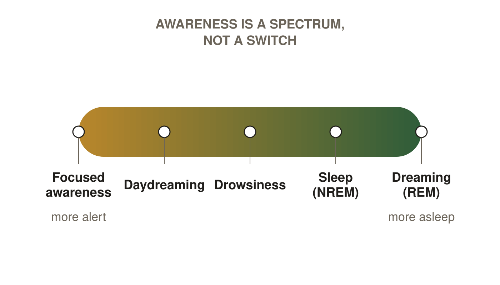
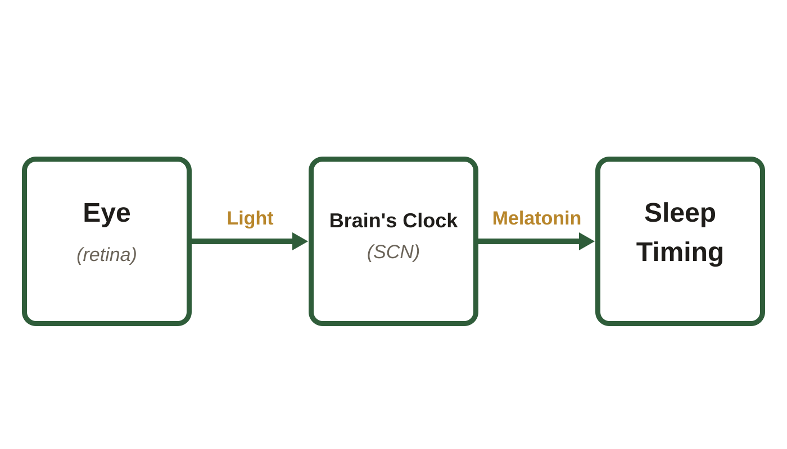
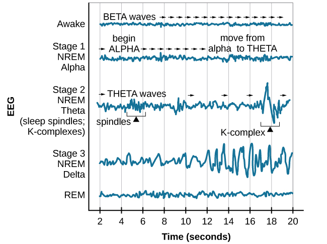
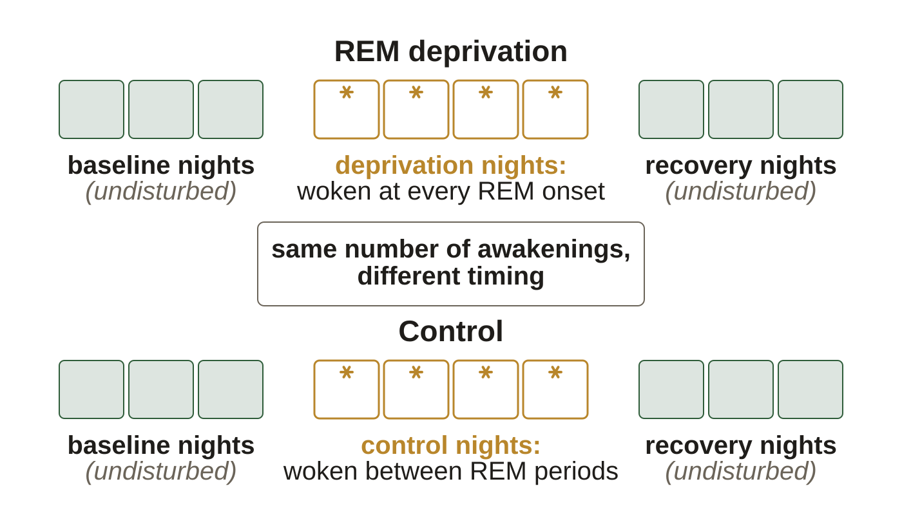
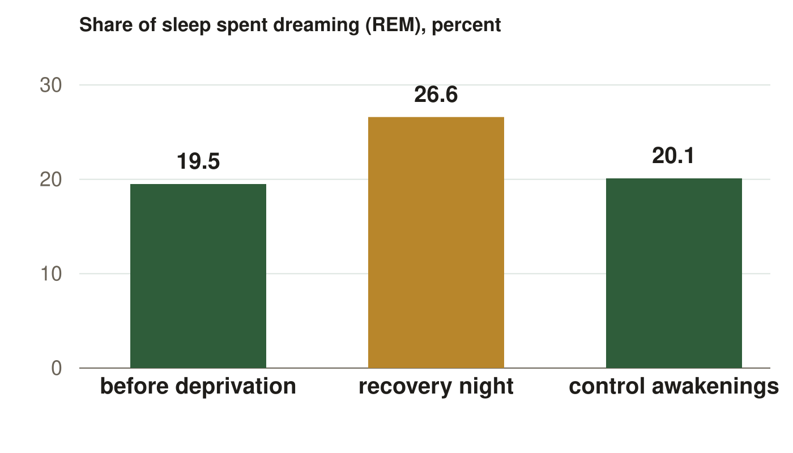
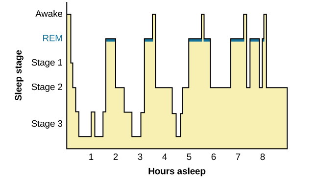

AP Psychology · Class 19
Figures from your class notes
Sleep. These are the same figures as in your Class Notes, in the same order. If a figure in your notes shows as a gray box, use this page instead.
Slide 5. What Consciousness Is

Awareness as a continuum, not a switch. NREM is sleep without rapid eye movement, REM is the dreaming stage.
Slide 6. The Clock Inside

Light reaches the eye, the eye sets the brain's clock, and the clock's melatonin signal sets sleep timing.
Slide 9. Reading a Sleeping Brain
 Scalp electrodes recording an EEG. OpenStax, Psychology 2e, Figure 3.29, CC BY 4.0, credit: SMI Eye Tracking
Scalp electrodes recording an EEG. OpenStax, Psychology 2e, Figure 3.29, CC BY 4.0, credit: SMI Eye Tracking
Slide 10. Reading a Sleeping Brain (continued)

One trace per stage, compared side by side, not one night in order. OpenStax, Psychology 2e, Figure 4.8, CC BY 4.0
Slide 14. One Night, Stage by Stage
 One night, in levels rather than on and off. OpenStax, Psychology 2e, Figure 4.12, CC BY 4.0
One night, in levels rather than on and off. OpenStax, Psychology 2e, Figure 4.12, CC BY 4.0
Slide 19. Same Awakenings, Different Timing

Two runs of nights, matched on awakenings and differing only in timing. The boxes stand for a run of nights, not a counted number.
Slide 21. What It Shows (continued)

Dream time as a share of sleep, in three conditions.
Slide 37. Reading One Night of Sleep

One night, in levels rather than on and off. OpenStax, Psychology 2e, Figure 4.12, CC BY 4.0
Slide 38. Reading One Night of Sleep (continued)
 One night, in levels rather than on and off. OpenStax, Psychology 2e, Figure 4.12, CC BY 4.0
One night, in levels rather than on and off. OpenStax, Psychology 2e, Figure 4.12, CC BY 4.0
All card banks